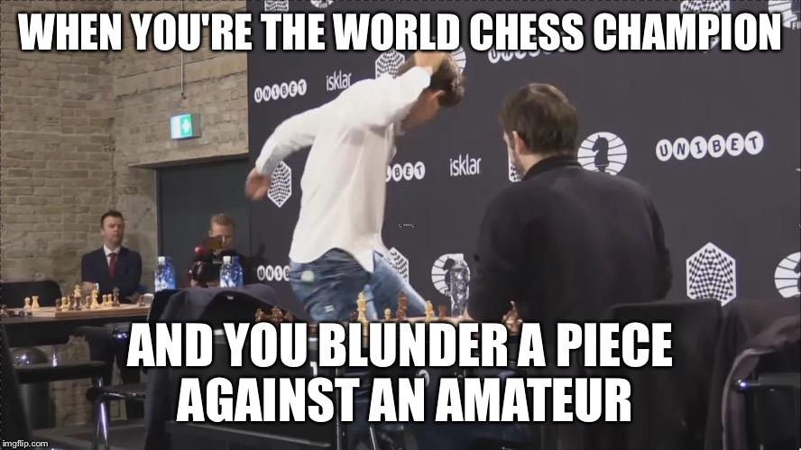
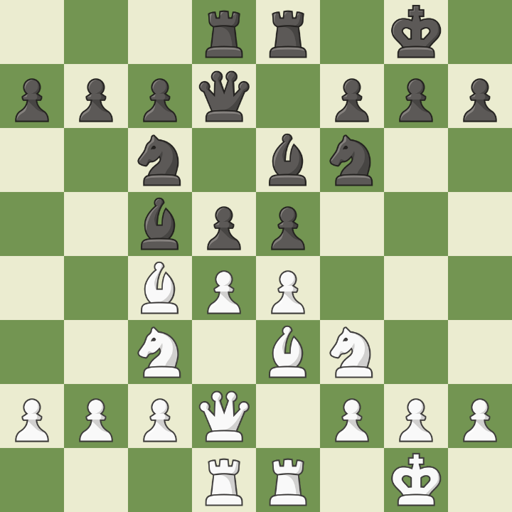

“We learn by chess the habit of not being discouraged by present bad appearances in the state of our affairs, the habit of fighting for a favorable change, and that of persevering in the search of resources.” (Benjamin Franklin)
The Checklist
"The Checklist? This dude just asked straightup - what's the checklist? Bro? This dude is on page 190 of a 200 page book and doesn't know the main characters." (Levy Rozman screams at the twitch chat)
- Checks
- Captures
- Threaten
- Thwart
Attack or Defend? Check if u can force opponent and attack them, if not then check if you are being forced. Free yourself. If neither of the above is the case for you, then advance towards some non-forcing attack. If that too doesn't seem possible, then just make ur position better (keep all pieces backed up or something) and defend.
Calculation
- Determine all meaningful options before going deep.
- Consider forcing moves first.
- Calculate maximum 3 moves ahead.
- Calculate for both sides.
- If a combination fails, try reordering the moves.
Middlegame
We can understand gameplay during a chess middlegame as a broad distribution across the following axes.
- Dynamics v/s Statics: Attacking and positional play. Note that positional doesn't necessarily mean defense.
- Intuition v/s Calculation: Intuition is based on good understanding of the game - both positional and attacking - whereas calculation is just calculation!
Statics involve all positional aspects of the game such as pawn structures, king safety, and development or activation of present pieces. Strictly positional or static players try to avoid unfamiliar positions, or positions in which they are being attacked.
Dynamics involve building up an attack and fighting (constantly) for a significant advantage towards victory. Attack initiatives rely on tactics and strategies. Tactics are simpler and almost always some form of double attack. They are the result of geometric patterns which occur again and again. After you have played for a while, you will recognize these patterns without thinking.
- If you see an opponent's piece on your half of the board, you're gonna need to neurtralize.
- Whether you are attacking or defending, back up.
- Sometimes you must sacrifice for the greater good.

Strategy
Strategies are simply long range plans that you need to think about and not simply react. And therein lies the beauty of chess, for without plans, chess becomes an "empty move-by-move threat-by-threat affair".
Opening
- The chessboard is a hill. The centre is the most important space.
- Castling must be done early.
- First we can move pawns but then we must defend them.
- Try to go towards the PERFECT setup.
- Knights love the centre.
- Bishops love open diagonals.

Endgame
- King stuck in last rank: Make sure that the King always has a way to escape and avoid last rank mates.
- Trapped queen: Knight and Bishop can checkmate you, if your development is bad.
- Scholar's mate: Thwart with Pawns and then with Knight.
- Basic mating strategies:
- 2 Rooks, at initial/last rank/file.
- Queen and King, at corners.
- Rook and King, its a long one.
- 2 Bishops, at board end-corners.
Space and Time
It is extremely necessary to understand the spatial structure of a chessboard. The best way to do this is to perform vision exercises. You should be able to visualize the chessboard and the moves without looking at it (board and piece vision).
Next comes understanding space and time within the context of a game. Each chess game represents a series of transformations, as the time, space, and force present themselves in different configurations as the game evolves. Sometimes the force is on you (defend), at other times on your opponent (attack).
Note that the force (nature of attack or dynamics) is dependent on the spatial configuration of current move and determines the next move or configuration. This is very similar to how in gravitation matter tells spacetime how to curve, and curved spacetime tells matter how to move.